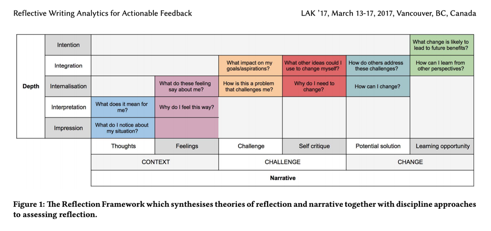
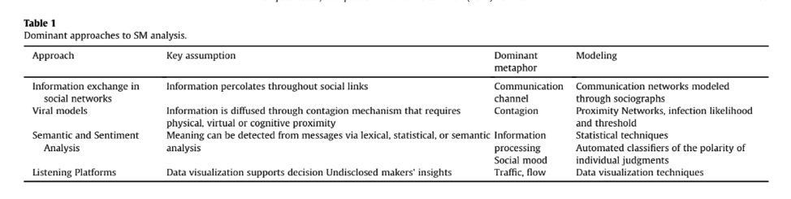

1. Read and annotate
“Chapter 7: Content Analytics: The Definition, Scope, and an Overview of Published Research” (Kovanović et al., 2017) from Handbook of Learning Analytics.
We recommend reading this article first, as it provides a nice introduction to the area of text/content analytics as part of the larger LA field. The authors also give an overview of several important studies that have implications for the future of content analytics.
2. Read and annotate
“Reflective Writing Analytics for Actionable Feedback” (Gibson et al, 2017), which is a case study that aimed to provide students with actionable feedback through an analytics program created by the Academic Writing Analytics project.
Since we will be using FROG in our class session, please tag your annotations for the two articles with “UsefulPoints,” “GoodPoints,” or “MuddyPoints” to keep track of topics relevant to your WG.

3. After completing the readings, consider the following reflection questions.
You will then be typing your answers into the AcaWriter tool discussed below:
- How have the readings changed and/or confirmed your thoughts about content analytics? Please provide specific examples. If you have had prior experience with content analytics, also share what that looked like, any difficulties you experienced, and outcomes you achieved.
- How do you think content analytics may (or may not) fit into your professional context? What challenges might you encounter? What insights might it provide?
- Reflect on how content analytics may be useful for your Working Group. Why would it be a good fit, or why not?
As you prepare your responses, keep in mind the developed “Reflection Framework” in order to make the most of the content analysis tool:

4. Play around with a text analysis tool!
Write your answers to the reflection questions in AcaWriter (a program created by the Academic Writing Analytics project), and review the feedback that you receive from the tool. We recommend writing at least 3-4 complete sentences for each question, using reflective language (e.g. “I think,” “I feel,” “I was challenged by,” “I now know,” etc.), and choosing the “Reflective Standard” option in the “Genre” drop-down menu in order to maximize the tool’s effectiveness.
Make sure to save your answers and the feedback, as we will be sharing these in class. Feel free to share any other text/discourse analysis tools you have used and your experiences with them via Slack!

5. Optional Reading:

If you engage with social media regularly (for professional, educational, or personal use), or are just interested, the following article provides a computational discourse method to make meaning of social media (SM) data. The article discusses “a methodology to analyze and visualize streams of Social Media messages, and [applies] it to a case in which Twitter is used as a backchannel, i.e. as a communication medium through which participants follow an event in the real world as it unfolds.”
Lipizzi, C., Dessavre, D., Iandoli, & Ramirez Marquez, J. (2016). Towards computational discourse analysis: A methodology for mining Twitter backchanneling conversations. Computers in Human Behavior, 64, 782-792.
If you have any questions or comments, please reach out to our SIG leaders on Slack.